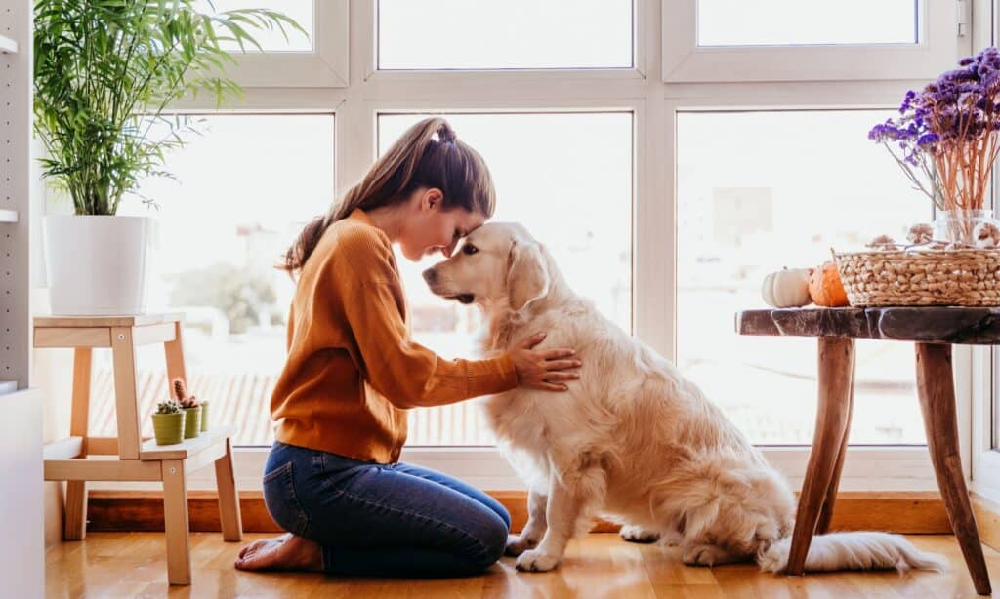

Adoption Process
Pet adoption is the process of transferring responsibility for a pet that was previously owned by another party such as a person, shelter, or rescue organization.

Adoption Requirements
To adopt a pet, you must:
- Be at least 18 years old
- Provide a government-issued photo ID
- Complete a preliminary questionnaire and meet with an Adoption Counselor
- Have the necessary environemnt at home
Adoption Fees
- DOGS ($85)
Dogs over 7 years of age ($40)
Prior to adoption, all dogs are spayed or neutered, microchipped, vaccinated, tested for heartworms, and given a dewormer and flea/tick prevention at no additional charge.
- CATS ($65)
Cats over 7 years of age ($40)
2 kittens from the same litter ($65)
All cats will be spayed or neutered, microchipped, vaccinated, combo tested for FIV and FeLV and given a dewormer and flea/tick prevention at no additional charge.
- OTHER SPECIES ($2 - $200)
Fish: $2 (per fish)
Mouse: $5
Duck: $10
Chicken: $10
Rat: $10
Rabbit: $20
Guinea Pig: $20
Bearded Dragon: $20
Parrot: $50
Goat: $75
ADOPTION PROCESS
-
BROWSE OUR PETS
If you are looking to adopt a a pet, use the filter options provided to narrow down your search by location, pet species, age and size. Breed is not a filter option because we do not DNA test our dogs to identify their breeds; thus, all dogs are listed as mixed breed. We know that all dogs are individuals, and we focus on matching people and pets based on personality!
Also, some of our pets live in foster homes and are designated under the Care Status filter, “In foster.” Foster pets are available for adoption, and foster parents can share a lot of information with you about the pet’s personality.
-
An Adoption Inquiry
Once a dog or cat catches your eye, click on the profile to learn more. You will be taken to a new screen hosted by Adopets. Click on the “Adopt Me” button to begin an adoption inquiry. And, you will need to create an Adopets account to submit an inquiry. Submitting an adoption inquiry is not a hold or reservation, nor does it guarantee your adoption. An inquiry is just the first step of the process and allows us to save time once the adoption is ready to be finalized.
Helpful tip: When you create your Adopets account, you can submit an inquiry for more than one pet without having to reenter your inquiry responses! Also, you can mark pets as “favorites” as you are browsing before submitting an adoption inquiry.
-
MEET THE PET
After submitting the adoption inquiry, you will receive an email confirmation with more instructions. This email will let you know whether the pet is at the shelter or in a foster home. For pets living at the shelter, please visit the shelter as soon as possible to meet the pet. Again, submitting an inquiry is not a hold or reservation for that pet. If another adopter visits us before you do, we are unable to hold the pet for you.
If the pet is in a foster home, the adoption teams will connect you with the pet’s foster parent via email within 72 hours. Then, the foster parent will reach out to you to share more information about their foster pet and to coordinate a time for you to meet the pet.
- DETERMINATION IF PET IS A GOOD MATCH
Next, it’s time to make a match. Our shelter teams and foster parents can help you decide whether this pet is a good match for your family’s needs. If the pet is not a good match, that’s okay! Adopting a pet is a big decision, and we can help you find a new match that best fits your family. When you find a good match then you are ready for the last step to finalize the adoption.
- FINALISE THE ADOPTION
The last (and most exciting) step to adopt a pet is to finalize the adoption. The adoption team will approve your Adopets inquiry, and then you will receive an email confirmation to sign the adoption contract and pay the adoption fee.
You can also add a donation during the checkout stage to help the thousands of pets we care for every year. Once the contract is signed and the fee is paid, that’s it!
Congratulations, you’re a pet parent! You may now take your new pet home from the shelter or from the foster parent.